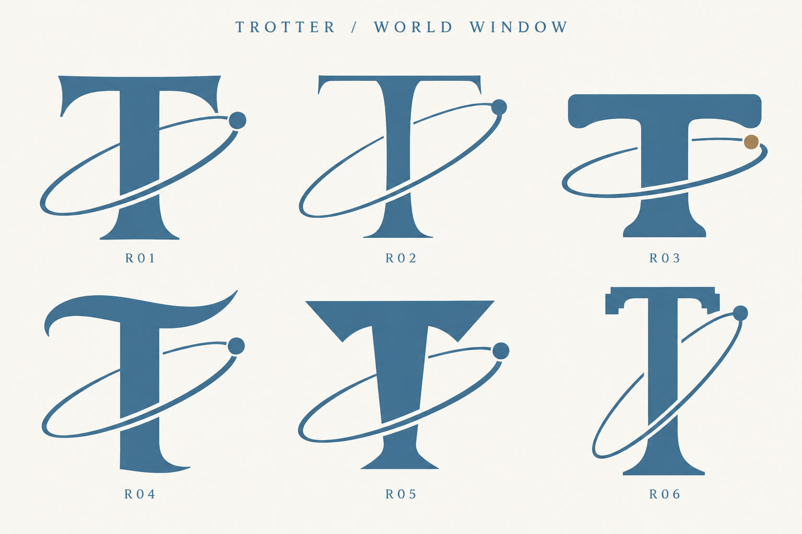
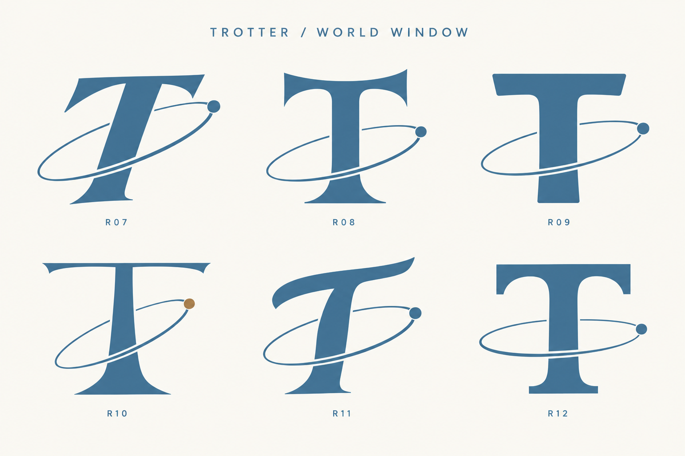

TROTTER
←
Previous 27 studies
World Window / Round 02
12 T + orbit studies
R01–R06
Full size
↗

R01 · R02 · R03 · R04 · R05 · R06
R07–R12
Full size
↗

R07 · R08 · R09 · R10 · R11 · R12
World Window
−
Fit
+
Fit
Full size ↗
Close ×
+ / − to zoom · Drag or scroll to move · Esc to close